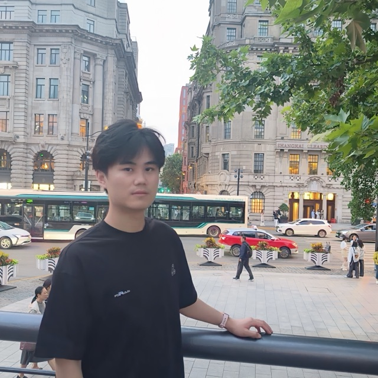

PhD · Pattern Recognition & Intelligent Systems
Huanxuan Liao 廖桓萱
I am a third-year PhD student in Pattern Recognition and Intelligent Systems at the  University of Chinese Academy of Sciences (UCAS)
and the
University of Chinese Academy of Sciences (UCAS)
and the  Institute of Automation, Chinese Academy of Sciences
(CASIA),
advised by Prof. Shizhu He and
Prof. Kang Liu.
Previously, I earned my B.Eng. from
Institute of Automation, Chinese Academy of Sciences
(CASIA),
advised by Prof. Shizhu He and
Prof. Kang Liu.
Previously, I earned my B.Eng. from  North China Electric Power University (NCEPU) (2023),
working with
Prof. Min Shi and Prof. Yun Ju.
North China Electric Power University (NCEPU) (2023),
working with
Prof. Min Shi and Prof. Yun Ju.
Research statement
I work on making large language models and multimodal LLMs practical under budget: long inputs, dense visual streams, and interactive agents should not require unbounded compute or memory. My research centers on three coupled directions— Long-Context & Multimodal Efficiency (input-side budget allocation, hybrid context / KV compression; e.g. ResAdapt, HyCo2, SparK), Efficient Reasoning & Policy Optimization (activating and transferring parametric / symbolic knowledge under cost-aware objectives; e.g. TAGI, SHIP, SpaRTA, BuPO / CAPO), and Agentic Systems & Tool Learning (tool use, evaluation, and memory for reliable agents; e.g. CITI, ETAPP, KATE, Distill Yourself). Across these lines I aim for methods that stay compatible with real inference stacks and learn stably from interaction and feedback.
Education & Background
PhD in Pattern Recognition and Intelligent Systems
 University of Chinese Academy of
Sciences (UCAS)
2023 - Present
University of Chinese Academy of
Sciences (UCAS)
2023 - Present
 Institute of Automation, Chinese Academy
of Sciences (CASIA)
2023 - Present
Institute of Automation, Chinese Academy
of Sciences (CASIA)
2023 - Present
B.Eng. in Intelligence Science and Technology
 North China Electric Power
University (NCEPU)
2019 - 2023
North China Electric Power
University (NCEPU)
2019 - 2023
Graduated with honors, Outstanding Graduate
Recent News
-
Jul 2026
Project Distill Yourself project homepage released
- Apr 2026
- Mar 2026
- Nov 2025
-
Oct 2025
Award Awarded National Scholarship by Ministry of Education at CASIA Scholarship
- May 2025
- Dec 2024
Publications
View on Google Scholar (* stands for equal contribution)
Conference Papers
Preprints
Collaborative Works
No publications match your search.
Awards & Honors
Scholarships & Honors
-
National Scholarship (国家奖学金)
Ministry of Education
CASIA (2025) - NCEPU (2021-2022, 2 consecutive years). Top scholarship in China; 0.2% domestically
-
Climbing Second Prize Scholarship
Institute of Automation, CAS, 2024
Top scholarship in CASIA
-
Beijing Outstanding Graduate Awards
Beijing Ministry of Education, 2023
Top graduate in Beijing
Competitions
-
National Third Prize
Information Security Competition, 2022
-
National Excellence
College Student Innovation and Entrepreneurship Project, 2021
Academic Services
Conference Reviewing
- ACL ARR 2024–2026
- NeurIPS 2025–2026
- ICML 2026
- COLM 2026
- ICLR 2025–2026
- AAAI 2026
Community Contributions
- Awesome-LLM-Long-Context-Modeling > 2.2k
- Distill Yourself Homepage
- LCLM-Horizon Survey Core Contributor
- NVIDIA/kvpress Contributor